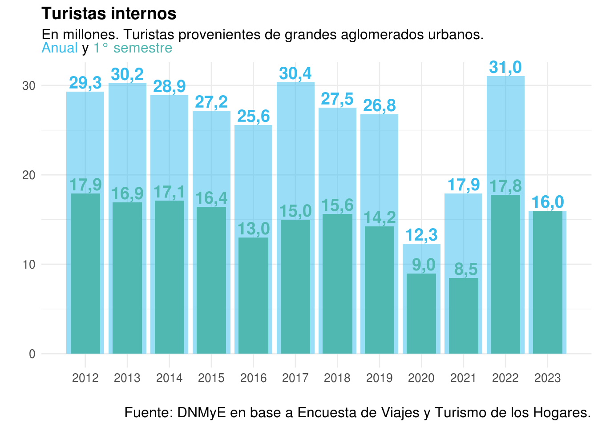

Introducción
Luego de la crisis provocada por la pandemia COVID-19 en el sector turístico, marcada por un descenso abrupto de la actividad tanto a nivel mundial como en Argentina, desde fines de 2021, el turismo interno comenzó a dar señales de reactivación, para luego iniciar una fuerte recuperación que convirtió al 2022 en un año récord. En este marco, aquí se presenta el Anuario Estadístico de Turismo (AET) 2022 , que contiene las estadísticas que evidencian la recuperación del sector tras la profunda caída atravesada. Con 31 millones de turistas provenientes de grandes aglomerados, en 2022 se alcanzó el nivel más alto desde por lo menos 2012.1 El mismo fenómeno se observó en la ocupación hotelera, donde las estimaciones de pernoctaciones de viajeros residentes alcanzaron los 42 millones, máximo valor desde el inicio de su medición en 2004. En tanto, la cantidad de viajeros hospedados en 2022 (16,6 millones) fue solo superada por la del año 2017 (16,8 millones). El inicio del año 2023 muestra una evolución estable: mientras que las pernoctaciones y viajeros residentes hospedados estuvieron por debajo del año 2022 (-8% y -4%, respectivamente), las mismas estimaciones para viajeros no residentes tuvieron un nivel del 124% y 137% superior. Esto resultó en un incremento interanual del 4% del total de pernoctaciones y del 10% de los viajeros. Por otra parte, en los primeros meses del año, los viajes de turistas internacionales retornaron a los niveles previos a la pandemia.


El turismo internacional, como muestra el AET 2021, sufrió una caída mayor y su recuperación demandó un tiempo más prolongado. En el año de referencia del presente anuario, las llegadas de turistas hacia nuestro país estuvieron un 47% por debajo de los valores de 2019. Sin embargo, puede distinguirse el comienzo de la recuperación hacia el final del año. El inicio de 2023 continuó con la mejora y ya para el mes de abril los registros superaron aquellos previos a la pandemia.

El profundo cambio estructural en el que se encuentra inmerso el sector a raíz de la crisis es el marco donde cobra relevancia la publicación del AET con una base más amplia de datos y estadísticas del turismo puesto que abre la oportunidad de profundizar en el estudio y conocimiento de este proceso y avanzar en el diseño de políticas públicas que orienten los cambios hacia un turismo más sostenible, inclusivo y resiliente, cuyos beneficios se repartan extensamente en todo el territorio. En este sentido, es importante señalar que el AET 2021, con el que se retomó la publicación del informe anual estadístico del turismo en Argentina (publicado entre 2005 y 2015), marcó el comienzo de una “segunda época” de este documento por su novedoso formato, completamente reproducible a partir de la difusión del código fuente utilizado en su elaboración. Este recurso fue el que permitió la pronta publicación del AET 2022. En relación al contenido del AET, además de la evolución de los volúmenes de turistas y gasto, cada capítulo del presente anuario permitirá ahondar en la dinámica y comportamiento de múltiples variables e indicadores turísticos antes y durante la pandemia y la posterior recuperación. El trabajo consta de ocho capítulos: en el capítulo 1 se exponen los principales números del turismo a nivel mundial a partir de la compilación de estadísticas de la Organización Mundial del Turismo (OMT). El capítulo 2 presenta las estadísticas de llegadas de turistas desde el exterior y las salidas desde nuestro país, así como los ingresos y egresos económicos por esta actividad, basándose en información de la Encuesta de Turismo Internacional (ETI), la Dirección Nacional de Migraciones (DNM) y las estadísticas de Balanza de Pagos (INDEC). El capítulo 3 refleja la actividad de los turistas argentinos dentro de nuestro país, tomando como fuente a la Encuesta de Viajes y Turismo de los Hogares (EVyTH) . El capítulo 4 está dedicado al análisis del alojamiento turístico en Argentina utilizando como fuente de datos al Padrón Único Nacional de Alojamiento (PUNA) y a la Encuesta de Ocupación Hotelera (EOH). En el capítulo 5 se incluyen datos sobre las visitas a Parques Nacionales del país, en base a información de la Administración de Parques Nacionales. El capítulo 6 provee información correspondiente al transporte aéreo de cabotaje e internacional de nuestro país en base a los datos de vuelos comerciales obtenidos de la Administración Nacional de Aviación Civil (ANAC). El capítulo 7 está destinado a la caracterización y análisis de las agencias de viajes habilitadas en el país, con datos del Registro de Agencias de Viajes de la Dirección Nacional de Agencias de Viajes. El capítulo 8 contiene una serie de indicadores económicos, construidos a partir de recomendaciones de la OMT y de la Comisión Económica para América Latina y el Caribe (CEPAL), que permiten ponderar la importancia de la actividad turística en la economía del país y en la de otros países de la región. Finalmente, el capítulo 9 presenta datos de empleo en el sector utilizando dos fuentes de información complementarias (EOH y Centro de Estudios para la Producción - CEP XXI).
El trabajo de la Dirección Nacional de Mercados y Estadísticas
La Dirección Nacional de Mercados y Estadística (DNMyE) de la Subsecretaría de Desarrollo Estratégico del Ministerio de Turismo y Deportes tiene como misión principal llevar adelante las acciones conducentes a la captación, procesamiento y elaboración de información estadística referida al turismo receptivo, interno y emisivo, y la oferta de actividades características del turismo, en el marco del sistema estadístico nacional, con especial atención en la implementación de la cuenta satélite de turismo. Se trata entonces de una organización productora de una gran cantidad de datos. De un tiempo a esta parte, el flujo de trabajo de la DNMyE se ha ido transformando con la idea de generar procesos más abiertos, colaborativos y reproducibles de modo de captar adecuadamente el potencial de sus recursos. Tras los cambios, los flujos son ahora más interdependientes, se desarrollaron infraestructuras para el almacenamiento y procesamiento de datos y nuevas plataformas para la comunicación de la información, lo que permitió una mejora en la explotación y exposición del gran conjunto de datos, estadísticas e investigaciones desarrolladas.
Internamente, la DNMyE se organiza a partir de 3 grandes áreas que, aunque no sean compartimentos estancos y el diseño se propone transversal, pueden ser definidas por su misión primaria:
ECONOMÍA: seguimiento de indicadores de actividad del sector en particular y la economía en general; generar reportes de evaluación de políticas y proyecciones.
ESTADÍSTICA: seguimiento y coordinación de los operativos estadísticos (ETI, EOH, EVyTH), producción de la Cuenta Satélite de Turismo de Argentina (CST-A) y articulación con equipos de datos o estadísticas de turismo en las jurisdicciones (provincias y municipios)
DATOS: proponer flujos de trabajo reproducibles y sistematizados; generación de software, tableros y reportes; desarrollo de nuevas fuentes de datos.

Adicionalmente, existen dos espacios de trabajo que se vinculan en buena medida con el área de datos:
ARMONIZACIÓN: organiza el trabajo federal que se hace con provincias y municipios y llevando adelante el desarrollo del Sistema Federal de Gestión de Datos Turísticos de la Argentina - TUR
COMUNICACIÓN:aglutina flujos de trabajo y procesos detrás del Sistema de Información Turística de la Argentina (SINTA), un conjunto de herramientas y plataformas que facilitan el acceso a datos e información turística de Argentina.
Para conocer más sobre el trabajo de la DNMyE: https://www.yvera.tur.ar/sinta/
Siglas y Acrónimos Utilizados
AP: Agencia de pasajes
ANAC: Administración Nacional de Aviación Civil
APN: Administración de Parques Nacionales
AT: Agencia de turismo
CABA: Ciudad Autónoma de Buenos Aires
CEPAL: Comisión Económica para América Latina y el Caribe
CST-A: Cuenta Satélite de Turismo de Argentina
DNM: Dirección Nacional de Migraciones
DNESEyCI: Dirección Nacional de Estadísticas del Sector Externo y Cuentas Internacionales
EOH: Encuesta de Ocupación Hotelera
ESFL: Empresa sin fines de lucro
ETI: Encuesta de Turismo Internacional
EVT: Empresa de viajes y turismo
EVyTH: Encuesta de Viajes y Turismo de los Hogares
INDEC: Instituto Nacional de Estadística y Censos
OMT: Organización Mundial del Turismo
PIB: Producto Interno Bruto
PN: Parque Nacional
RCT: Ramas Características del Turismo
SIPA: Sistema Integrado Previsional Argentino
TOP: Tasa de ocupación de plazas
$: Peso (Moneda nacional)
US$: Dólares estadounidenses
Las estadísticas de turismo interno, para los habitantes de los 31 grandes aglomerados urbanos -donde reside alrededor del 63% del país- que releva la EVyTH, pueden consultarse como informes, reportes o datos abiertos↩︎